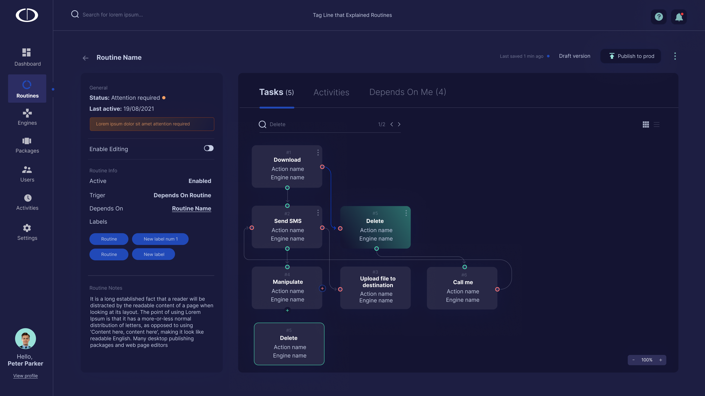
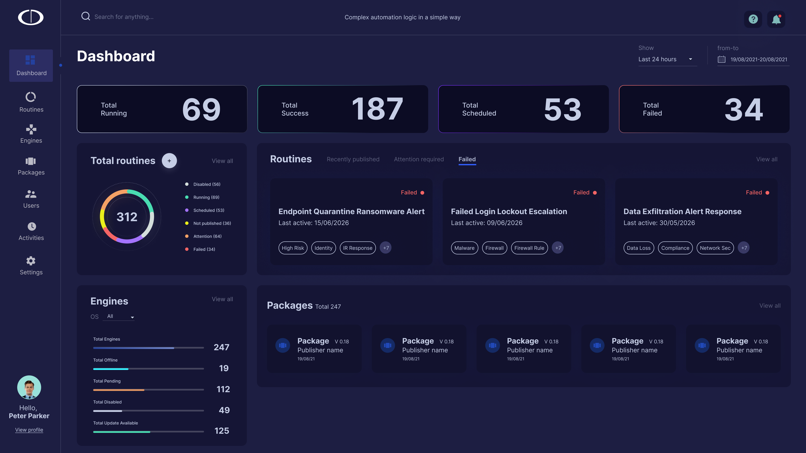
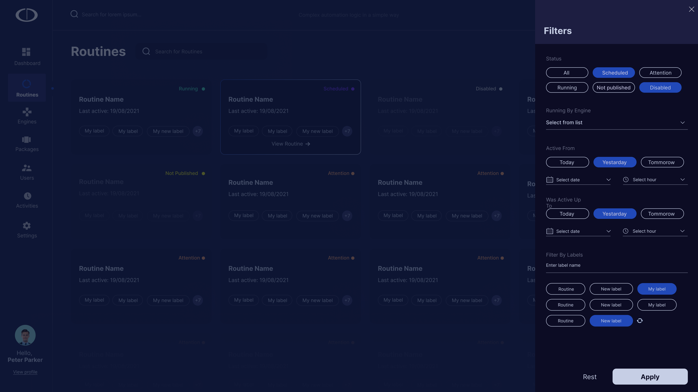
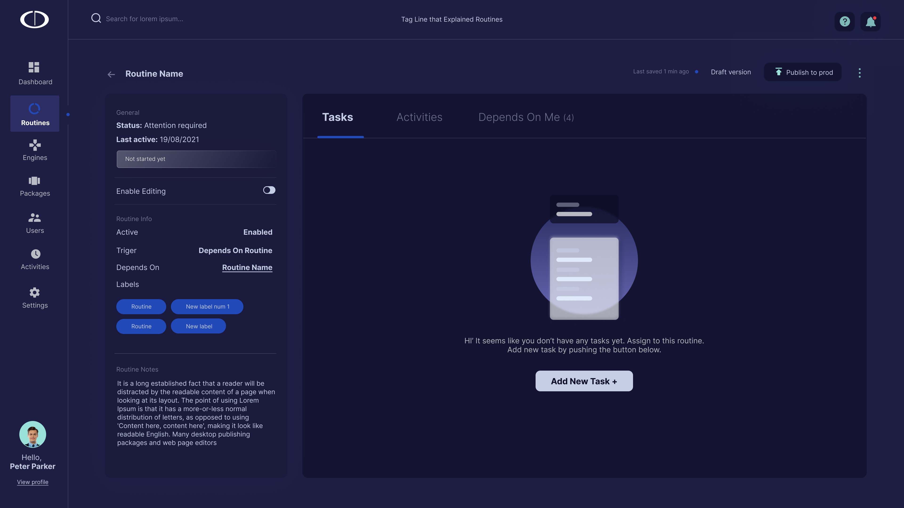
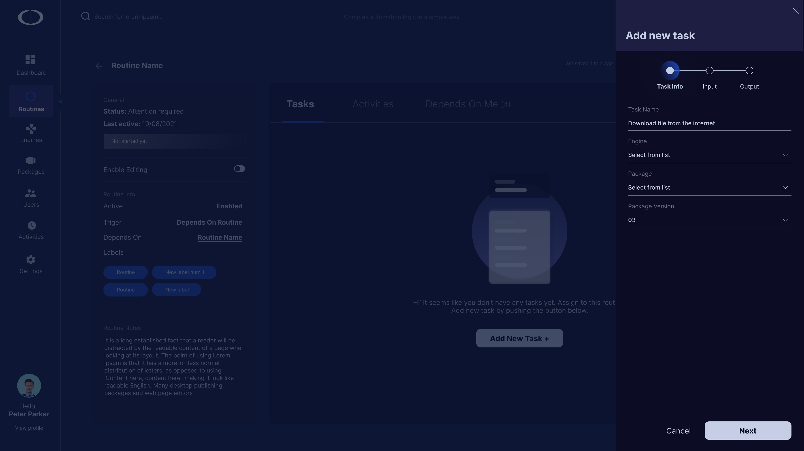
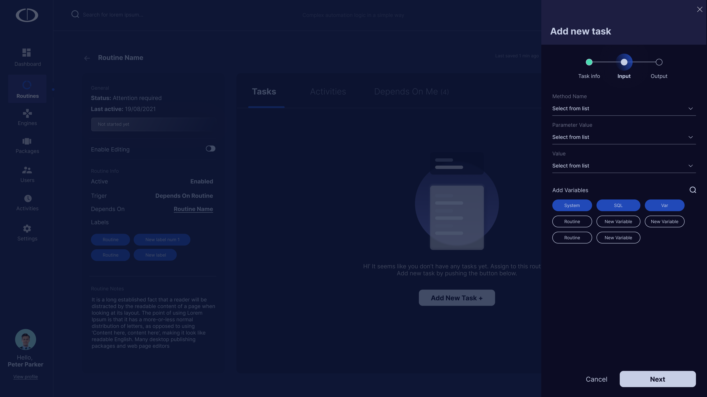
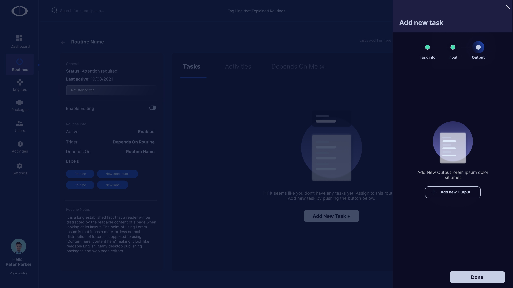
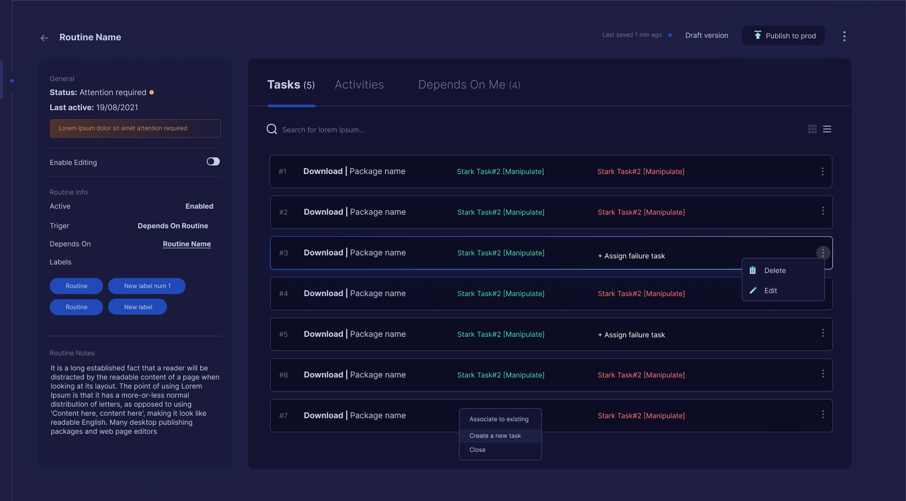

The product and the problem
BulwarX is an Israeli cybersecurity integration company headquartered in Ra'anana. Their business is implementing and managing enterprise security stacks for organizations across industries, working with partners including Palo Alto Networks, Microsoft, CyberArk, Broadcom, and Netskope. Routines is an in-house platform BulwarX built for their own operations and for their managed security clients: a visual automation engine that lets security teams respond to threats, run investigations, and manage remediation without manual intervention. A Routine chains together Tasks, each one performing a discrete action like downloading a file, scanning for malware, sending an alert, or quarantining a device, connected through branching logic that handles success, failure, and edge cases.
My Role
End-to-end design: research, flows, information architecture, UI, dashboard, workflow builder, task creation experience, and dev handoff
Users
CISOs, SOC team leads, security analysts, and IT operations managers at enterprise organizations
Domain
SOAR (Security Orchestration, Automation and Response). A category of tools used to coordinate and automate security operations
Challenge
Design a workflow builder powerful enough for complex security logic, but accessible enough that analysts can build and own it without engineering support
Automation that can't be a black box
In security, trust is non-negotiable. An analyst who doesn't understand what a Routine does won't run it. A CISO who can't audit what ran during an incident has a compliance problem. Unlike most SaaS tools where "it just works" is a feature, in security operations, opacity is a liability.
That constraint shaped every design decision. Every Routine needed to be readable, not just functional.
Every Routine had to be fully auditable. Analysts needed to trace exactly what ran, what the output was, and where a failure occurred, without reading logs.
Failure paths were as important as success paths. A silent failure in a security workflow is worse than no automation. Every branch, retry, and fallback had to be visible and intentional.
Non-engineers had to be the primary builders. If Routine creation required engineering support, adoption would stall. The UI had to be powerful enough for complex logic, simple enough for an analyst who's never written code.
The system had to handle real-time load. Running jobs, failed jobs, and scheduled jobs all needed to be visible simultaneously, without overwhelming the person monitoring them.
This pushed me away from the standard SOAR approach of script-based configuration and toward a visual-first system where the logic of a Routine could be read at a glance, not decoded from a config file.
Who actually runs the security operations
I ran research sessions with security professionals across three roles: CISOs responsible for strategy and compliance, SOC team leads managing daily operations, and frontline security analysts doing the actual triage and response work. The most revealing insight was a split that I didn't expect.
CISOs cared about visibility and reporting. Analysts cared about speed and clarity. But the people in between, the SOC team leads, were where the real pain lived. They were the ones context-switching between management dashboards, raw alert feeds, and makeshift scripts. They were the intended primary users of BulwarX, and they were being served poorly by every existing tool.
Goals
Reduce manual triage time. Build automated playbooks his team can run without him. Have clear visibility into what's running and what's failing, without digging into logs.
Frustrations
Existing SOAR tools require Python. His team is 6 analysts, not engineers. By the time a playbook is built, the threat landscape has changed. Failed automations are invisible until something breaks.
Context
Processes 300+ alerts per day. Spends roughly 40% of his time on manual triage that he knows could be automated. Reports directly to CISO, responsible for SOC performance metrics.
Mental model
Thinks in playbooks and decision trees, not code. If shown a visual flow with conditions and branches, he can read it instantly. If shown a YAML file, he needs an engineer.
Why existing SOAR tools fail analysts
The SOAR market is dominated by tools built by engineers, for engineers. The assumption baked into almost every competitor is that the person creating automations has a technical background. That assumption is wrong for most mid-market security teams, and it's where BulwarX had real room to differentiate.
- Extremely powerful and deeply integrated across the security stack
- Playbook creation is primarily Python-based, requiring engineering involvement
- Visual canvas exists but is supplementary to code, not a replacement for it
- Setup and onboarding typically takes weeks, with steep configuration overhead
- More developed visual playbook builder than XSOAR, but still engineer-first
- Interface is dense with a steep learning curve despite drag-and-drop
- The distinction between Apps, Actions, and Playbooks causes onboarding confusion
- Failure state visibility is limited, failed paths are not surfaced clearly
- Cloud-native SIEM with strong Azure ecosystem integration
- Automation through Logic Apps feels bolted on, not purpose-built for security ops
- Monitoring and failure tracing requires switching between multiple Azure interfaces
- Not a dedicated SOAR tool, and the workflow experience reflects that clearly
The gap across all three: none of them treat the security analyst as the primary workflow builder. BulwarX's opportunity was to own that space.
Strengths
Visual-first workflow builder designed for analysts, not engineers. Step-by-step task creation reduces cognitive load. Real-time monitoring with clear failure states. Dark theme designed for extended SOC use.
Weaknesses
Newer platform with fewer pre-built integrations than XSOAR or Splunk. No established customer base to draw social proof from. Enterprise sales cycle requires proven reliability.
Opportunities
Mid-market SOC teams underserved by enterprise-priced tools. Growing demand for no-code automation. Analyst-owned playbooks reduce dependency on stretched engineering teams.
Threats
Palo Alto and Splunk continue to improve their visual builders. Enterprise lock-in through existing SIEM investments. Security buyers prefer established vendors for perceived reliability and compliance.
How do analysts think about workflows?
Before touching UI, I ran a card-sorting exercise with three analysts and two SOC team leads. I gave them a complex incident scenario, a malware investigation with multiple possible outcomes, and asked them to map the response flow on a whiteboard. Every person drew the same structure: a top-down decision tree with branching paths, clear labels on each outcome, and explicit "what happens if this fails" branches alongside the success path.
That told me everything I needed to know about the right interaction model. The question was how to translate that mental model into a builder that was both powerful and usable.

Four surfaces, one operational picture
The BulwarX Routines experience follows a single creation journey across five surfaces, from situational awareness, to the Routine library, to creating and building out a Routine, to the completed visual workflow.
The Dashboard
The first screen any analyst or CISO sees. Designed to answer one question immediately: what's happening right now and does anything need my attention? The dashboard surfaces Running Jobs, Failed Jobs, Scheduled Jobs, Engine health, and Package status in a single view.

Routine Management
The central library of all Routines in the organization. Analysts can search, filter by status, engine, or label, and understand the health of each automation at a glance without opening it. Card layout was chosen over a table to support scanning by status, not just by name.


Creating a New Routine
From the library, analysts launch a new Routine through a minimal creation panel, name, trigger, dependencies, and labels. Keeping the entry form short was intentional: early testing showed analysts abandoned creation when asked too many questions upfront. Advanced configuration happens inside the Routine, not during creation.

Task Creation Wizard
Once inside a Routine, analysts add Tasks through a structured three-step wizard: Information (name, engine, description), Input (what data this Task needs), Output (what it returns and what each outcome triggers). Each step is a single concern, analysts never have to think about inputs and outputs at the same time.




The Workflow Builder
The completed Routine lives here: a visual canvas where every Task is a node, every connection is a decision, and every failure path is visible at full weight alongside the success path. This is the output of the entire creation journey, a Routine that reads like a flowchart, not a config file. Analysts can audit, modify, and share it without needing the person who built it in the room.

Design decisions that drove impact
Rather than optimizing for a single metric, the goal was to reduce friction at every stage of the analyst workflow, from understanding what a Routine does, to building one, to trusting it in production.
"This is the first automation tool I've used where I can actually read what a Routine does without asking the person who built it."
SOC Team Lead, pilot organization
What I'd do differently
The hardest design problem on this project wasn't the workflow builder. It was designing for failure states. In most products, the error path is a secondary concern. In security automation, it's co-equal to the happy path. Every Routine we shipped had as much design thinking in its failure branches as in its core flow, and that was a mental shift I had to drive across the entire team.
If I were starting over, I would have introduced the side panel pattern earlier in the project. We went through two rounds of redesign on the Task editing experience before landing on the side panel, and both earlier versions broke the spatial context of the canvas in ways that analysts noticed immediately in testing. The insight was obvious in hindsight: people who spend hours in a workflow canvas develop a spatial memory for where things are. Breaking that context to edit a single node is a real cost.
The broader lesson: in tools designed for experts, respecting the user's mental model isn't a UX nicety. It's the product. Security analysts are professionals operating under pressure. Design that fights their instincts is design they'll route around.